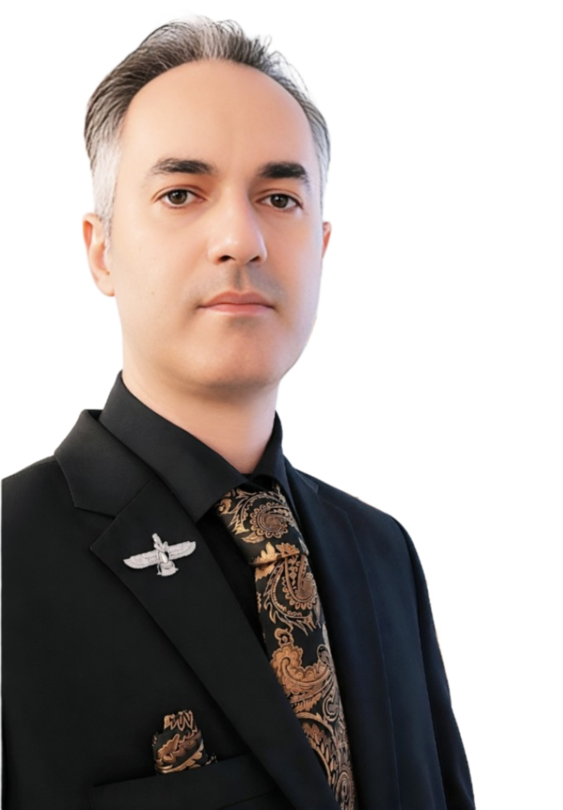

Мохаммадмахди Рубин
Учредитель и управляющий редактор
Организационная принадлежностьНезависимый исследователь · Иран
Специализация
Преподавание русского языка · Перевод · Учебные программы · Языкознание
Преподавание русского языка · Перевод · Учебные программы · Языкознание
Emailmm.rubin@ut.ac.ir
ORCID0009-0004-8475-2804
Членство
- Член Немецкой ассоциации когнитивной лингвистики (DGKL/GCLA)
- Член Дома книги и литературы Ирана
- Член Ассоциации писателей «Сарай-е Ахл-е Калам»
Избранный академический профильИзбранная научная информация и достижения будут дополнены позднее.